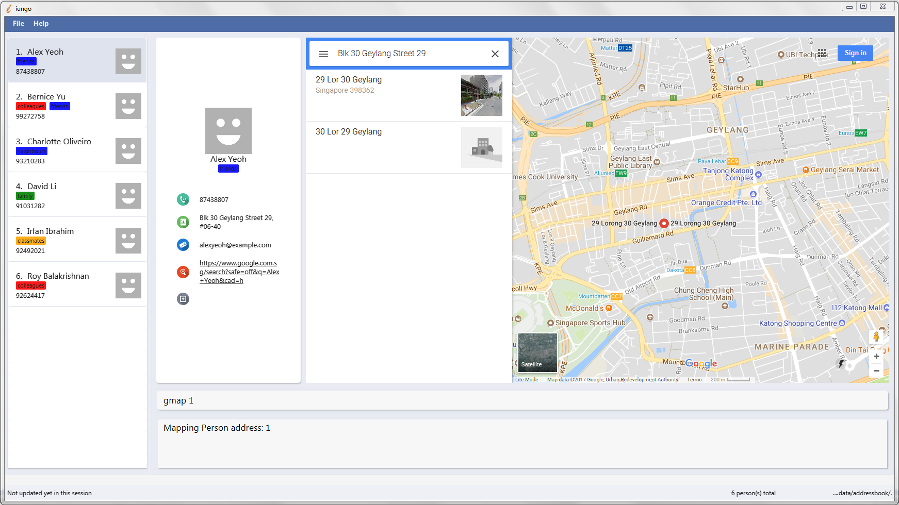

By: Team F11-B3 Since: Oct 2017 Licence: MIT
- 1. Quick Start
- 2. Features
- 2.1. Viewing help :
help - 2.2. Viewing About us :
about - 2.3. Adding a person:
add,a - 2.4. Listing all persons :
list,l - 2.5. Sorting the contact list :
sort - 2.6. Editing a person :
edit,e - 2.7. Locating persons by full keyword:
find,f - 2.8. Locating persons by partial keyword:
findany,fa - 2.9. Deleting a person :
delete,d - 2.10. Selecting a person :
select,s - 2.11. Adding a Remark to a person :
remark,re - 2.12. Setting an avatar for a contact :
setavatar,sa - 2.13. Listing entered commands :
history,h - 2.14. Undoing previous command :
undo,u - 2.15. Redoing the previously undone command :
redo,r - 2.16. Selecting a theme :
theme,t - 2.17. Display recently searched contacts :
recent,rc - 2.18. Viewing the address of a contact :
gmap,gm - 2.19. Clearing all entries :
clear,c - 2.20. Exiting the program :
exit - 2.21. Saving the data
- 2.1. Viewing help :
- 3. FAQ
- 4. Command Summary
1. Quick Start
-
Ensure you have Java version
1.8.0_60or later installed in your Computer.Having any Java 8 version is not enough.
This app will not work with earlier versions of Java 8. -
Download the latest
addressbook.jarhere. -
Copy the file to the folder you want to use as the home folder for your Address Book.
-
Double-click the file to start the app. The GUI should appear in a few seconds.
-
The application will be preloaded with sample contacts. Type
clearin the command box to reset the addressbook. For more information, look at 5.
-
-
Type the command in the command box and press Enter to execute it.
e.g. typinghelpand pressing Enter will open the help window. -
Some example commands you can try:
-
list: lists all contacts -
addn/John Doe p/98765432 e/johnd@example.com a/John street, block 123, #01-01: adds a contact namedJohn Doeto the Address Book. -
delete3: deletes the 3rd contact shown in the current list -
exit: exits the app
-
-
Refer to the Features section below for details of each command.
2. Features
Command Format
-
Words in
UPPER_CASEare the parameters to be supplied by the user e.g. inadd n/NAME,NAMEis a parameter which can be used asadd n/John Doe. -
Items in square brackets are optional e.g
n/NAME [t/TAG]can be used asn/John Doe t/friendor asn/John Doe. -
Items with
… after them can be used multiple times including zero times e.g.[t/TAG]…can be used ast/friend,t/friend t/familyetc. -
Parameters can be in any order e.g. if the command specifies
n/NAME p/PHONE_NUMBER,p/PHONE_NUMBER n/NAMEis also acceptable.
Some commands have aliases — shorter command parameters. If they exist, they will be positioned beside the
full command in the header title.E.g. Adding a person : add, a
|
Some commands can be undone. If they exist, an UNDOABLE will be positioned below the full command in the header.
|
2.1. Viewing help : help
Format: help
2.2. Viewing About us : about
Format: about
2.3. Adding a person: add, a
UNDOABLE
Adds a person to the address book
Addable parameters: name, phone, email, address, homepage, remark, tag
Format: add n/NAME p/PHONE_NUMBER [e/EMAIL] [a/ADDRESS] [h/HOMEPAGE] [re/REMARK] [t/TAG]…
|
A person can have any number of tags (including 0) |
The EMAIL, ADDRESS, HOMEPAGE, REMARK and TAG parameters are OPTIONAL {since v1.5rc}
|
There is also another way to add a remark to a person; refer to the Remark section
|
A person will have a default homepage of a Google search of his/her name, if /h was not included in the add command
|
The HOMEPAGE provided should be a complete URL, including the http:// header.
|
Avatars cannot be added with this command, they need to be set separately. Refer to the Set avatar section
|
Examples:
-
add n/John Doe p/98765432 e/johnd@example.com a/John street, block 123, #01-01 h/http://www.johndoe.com -
add n/Betsy Crowe t/friend a/Newgate Prison p/1234567 t/criminal -
a n/Jane Doe p/87654321 e/janede@example.com
2.4. Listing all persons : list, l
Shows a list of all persons in the address book.
Format: list
2.5. Sorting the contact list : sort
UNDOABLE
{since v1.2}
Sorts the contact list in either [a]scending or [d]escending order and shows the list.
Format: sort a or sort d
2.6. Editing a person : edit, e
UNDOABLE
Edits an existing person in the address book.
Editable parameters: name, phone, email, address, homepage, remark, tag
Format: edit INDEX [n/NAME] [p/PHONE] [e/EMAIL] [a/ADDRESS] [h/HOMEPAGE] [re/REMARK] [t/TAG]…
| If the name is edited and the contact did not previously have a custom homepage set, the default homepage will switch to a Google search of the new name. If there was a custom homepage set, the homepage will not change |
There is also another way to edit a remark of a person; refer to the Remark section
|
Examples:
-
edit 1 p/91234567 e/johndoe@example.com
Edits the phone number and email address of the 1st person to be91234567andjohndoe@example.comrespectively. -
e 2 n/Betsy Crower h/http://www.google.com t/
Edits the name of the 2nd person to beBetsy Crower, sets the homepage to behttp://www.google.com, and clears all existing tags.
2.7. Locating persons by full keyword: find, f
{find by parameters available since v1.2}
Finds persons whose details contain any of the given specified keywords. Keyword must be exact
Format: find KEYWORD [MORE_KEYWORDS]
[p/PHONE] KEYWORD [MORE_KEYWORDS]
[e/EMAIL] KEYWORD [MORE_KEYWORDS]
[a/ADDRESS] KEYWORD [MORE_KEYWORDS]
[h/HOMEPAGE] KEYWORD [MORE_KEYWORDS]
[t/TAG] KEYWORD [MORE_KEYWORDS]
Examples:
Find by Name:
-
find John
ReturnsjohnandJohn Doebut does not returnJohnson -
f Betsy Tim John
Returns any person having namesBetsy,Tim, orJohnbut does not returnJohnson
Find by Phone:
-
find p/9123456
Returns any person having phone9123456 -
find p/9123456 8123456
Returns any person having phone9123456,8123456
2.8. Locating persons by partial keyword: findany, fa
{since v1.2}
Finds persons whose details contain any of the given specified keywords. Keyword can be partial.
Format: findany KEYWORD [MORE_KEYWORDS]
[p/PHONE] KEYWORD [MORE_KEYWORDS]
[e/EMAIL] KEYWORD [MORE_KEYWORDS]
[a/ADDRESS] KEYWORD [MORE_KEYWORDS]
[h/HOMEPAGE] KEYWORD [MORE_KEYWORDS]
[t/TAG] KEYWORD [MORE_KEYWORDS]
Examples:
Find by Name:
-
findany john
Can returnJohnsonandJohn Doe -
fa Bets Tim John
Returns any person having names containingBets,Tim, orJohn, i.e.Betsy,Timothy, orJohnson.
Find by Phone:
-
findany p/9123
Returns9123456,91234888 -
fa p/123 777 888
Returns any person having phone9123456,8123456,8777666, or9888555
2.9. Deleting a person : delete, d
UNDOABLE
Deletes the specified person from the address book.
Format: delete INDEX
Examples:
-
list
delete 2
Deletes the 2nd person in the address book. -
find Betsy
d 1
Deletes the 1st person in the results of thefindcommand.
2.10. Selecting a person : select, s
Selects the person identified by the index number used in the last person listing.
Format: select INDEX
Examples:
-
list
select 2
Selects the 2nd person in the address book. -
find Betsy
s 1
Selects the 1st person in the results of thefindcommand.
2.11. Adding a Remark to a person : remark, re
UNDOABLE
{since v1.1}
Give a person a remark by the index number used in the last person listing.
Format: remark INDEX re/REMARK
Examples:
-
list
remark 2 re/He’s my childhood friend
Give the 2nd person a remark in the address book. -
find Betsy
re 1 re/Owes me money
Gives the 1st person in the results of thefindcommand a remark.
2.12. Setting an avatar for a contact : setavatar, sa
{since v1.3}
Sets an avatar for a contact referenced by the index number used in the last person listing.
If AVATAR_URL is empty; i.e sa INDEX sa/, the current avatar (if any) will be deleted.
Format: setavatar INDEX sa/[AVATAR_URL]
Alias: sa INDEX sa/[AVATAR_URL]
| This requires an active Internet connection to work, as the application requires an URL to retrieve the image. |
This command cannot be undone, if sa INDEX sa/ is invoked, you will need to add the avatar again with an URL.
|
Examples:
-
setavatar 1 sa/https://i.imgur.com/xPHOeWL.png
Sets the avatar of the 1st person listed to be the image as referenced by https://i.imgur.com/xPHOeWL.png.
{kind=link}
2.13. Listing entered commands : history, h
Lists all the commands that you have entered in reverse chronological order.
Format: history
|
Pressing the ↑ and ↓ arrows will display the previous and next input respectively in the command box. |
2.14. Undoing previous command : undo, u
Restores the address book to the state before the previous undoable command was executed.
Format: undo
|
Undoable commands: those commands that modify the address book’s content ( |
Examples:
-
delete 1
list
undo(reverses thedelete 1command) -
select 1
list
u
Theundocommand fails as there are no undoable commands executed previously. -
delete 1
clear
undo(reverses theclearcommand)
u(reverses thedelete 1command)
2.15. Redoing the previously undone command : redo, r
Reverses the most recent undo command.
Format: redo
Examples:
-
delete 1
undo(reverses thedelete 1command)
r(reapplies thedelete 1command) -
delete 1
redo
Theredocommand fails as there are noundocommands executed previously. -
delete 1
clear
undo(reverses theclearcommand)
u(reverses thedelete 1command)
redo(reapplies thedelete 1command)
r(reapplies theclearcommand)
2.16. Selecting a theme : theme, t
{since v1.3}
Selects the theme identified by the index number.
Format: theme INDEX
Examples:
-
theme
theme 1
Select and load the first theme in the results of thethemelistcommand. -
t
theme 2
Select and load the second theme in the results of thethemelistcommand.
2.17. Display recently searched contacts : recent, rc
{since v1.4)
Shows a list of all contacts that was returned by find command since application was started.
Format: recent
2.18. Viewing the address of a contact : gmap, gm
{since v1.4}
Selects the person identified by the index number used in the last person listing and displays the address found in a webpage using Google Map.
Format: gmap INDEX
Examples:
-
list
gmap 2
Selects the 2nd person in the address book and displays the address in a webpage using Google Maps. -
find Betsy
gm 1
Selects the 1st person in the results of thefindcommand and displays the address in a webpage using Google Maps.
2.19. Clearing all entries : clear, c
Clears all entries from the address book.
Format: clear
2.20. Exiting the program : exit
Exits the program.
Format: exit
2.21. Saving the data
Address book data are saved in the hard disk automatically after any command that changes the data.
There is no need to save manually.
3. FAQ
Q: How do I transfer my data to another Computer?
A: Install the app in the other computer and overwrite the sample data file it creates with the file that contains the data of your previous Address Book folder.
4. Command Summary
4.1. Full commands
-
Add :
add n/NAME p/PHONE_NUMBER [e/EMAIL] [a/ADDRESS] [h/HOMEPAGE] [t/TAG]…
e.g.add n/James Ho p/22224444 e/jamesho@example.com a/123, Clementi Rd, 1234665 t/friend t/colleague -
Sort :
sort [a]orsort [d] -
Clear :
clear -
Delete :
delete INDEX
e.g.delete 3 -
Edit :
edit INDEX [n/NAME] [p/PHONE_NUMBER] [e/EMAIL] [a/ADDRESS] [h/HOMEPAGE] [t/TAG]…
e.g.edit 2 n/James Lee e/jameslee@example.com -
Find whole word :
find KEYWORD or [p/PHONE],[e/EMAIL], [a/ADDRESS], [h/HOMEPAGE], [t/TAG] [MORE_KEYWORDS]e.g.
find John
ReturnsjohnandJohn Doebut does not returnJohnsone.g.
find e/example@example.com
Returnsexample@example.comonly -
Find any :
findany KEYWORD or [p/PHONE],[e/EMAIL], [a/ADDRESS], [h/HOMEPAGE], [t/TAG] [MORE_KEYWORDS]e.g.
findany john
ReturnsJohnsonandJohn Doee.g.
findany p/123
Returns123456,567123,967123456 -
List :
list -
Help :
help -
About us :
about -
Select :
select INDEX
e.g.select 2 -
History :
history -
Undo :
undo -
Redo :
redo -
Recent :
recent -
Remark :
remark INDEX re/REMARK -
Set avatar :
setavatar INDEX sa/AVATAR_URL -
Change theme :
theme INDEX
4.2. Alias commands
-
Add :
a -
Sort : no alias
-
Clear :
c -
Delete :
d -
Edit :
e -
Find exact :
f -
Find any :
fa -
List :
l -
Help : no alias
-
About us : no alias
-
Select :
s -
History :
h -
Undo :
u -
Redo :
r -
Recent :
rc -
Remark :
re -
Set avatar :
sa -
Change theme :
t